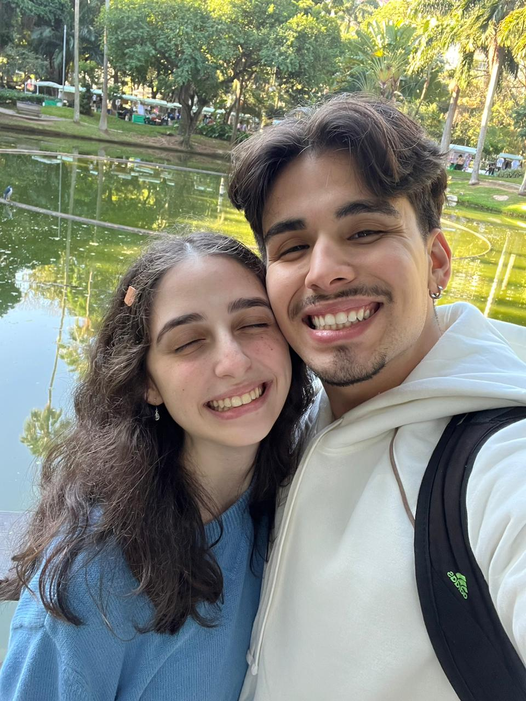
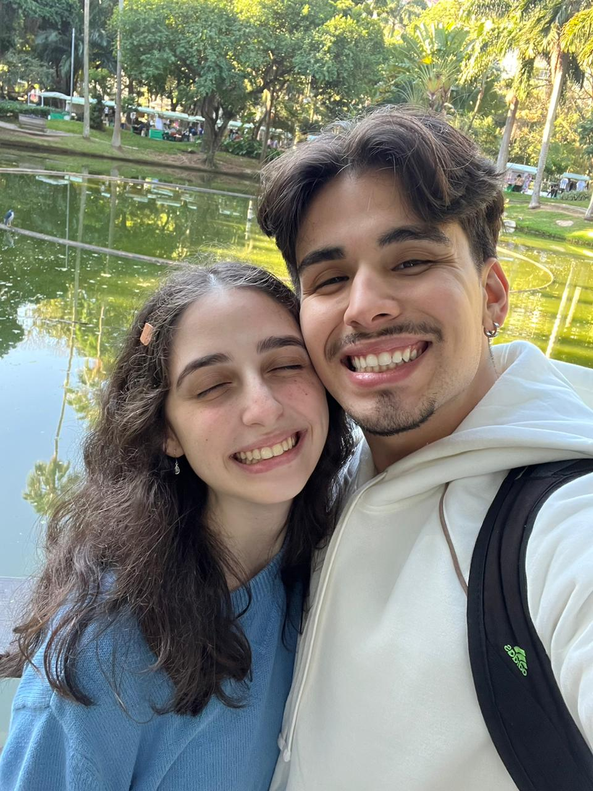
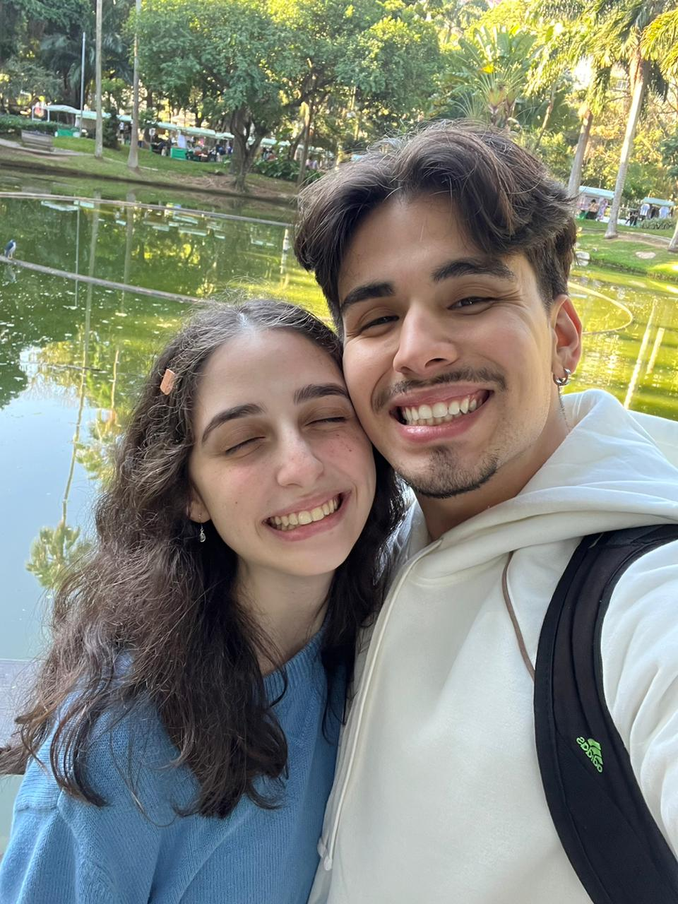

Gatinha, que a Força una nossos corações para sempre. Quer namorar comigo?

 

A long time ago in a galaxy far, far away...
EPISÓDIO I
O DESPERTAR DE PIRINDUCA
No pacífico sistema estelar do bairro Zulu, em Niterói, o destino tramou algo inesperado durante a celebração de um jovem padawan — o aniversário do irmão da futura heroína desta história.
Foi lá que o intrépido Theoleoleo, mestre dos códigos e guardião de playlists épicas, conheceu sua futura parceira Jedi, a doce e destemida Gatinha. No início, essa união parecia arriscada — afinal, ela era irmã de um de seus aliados mais próximos — mas a Força tinha outros planos.
Rapidamente, algo poderoso surgiu entre eles. Desde o primeiro dia, tudo foi fácil: risadas fluíam como naves no hiperespaço, conversas atravessavam noites inteiras em transmissões holográficas (também conhecidas como chamadas de vídeo), e o carinho crescia a cada parsec.
Mesmo morando em sistemas estelares distantes, nada conseguiu impedir essa conexão. Agora, Theoleoleo prepara-se para uma nova jornada: mudar-se para Niterói e lutar lado a lado com Gatinha contra qualquer ameaça à galáxia... e ao coração deles.
